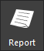

iTest User's Guide
SolutionBuilder is an offline configuration tool for creating test environments. It contains a set of editors for customizing displays and tests. You can construct AutomationPanel interfaces using the Layouts, Toolbars, and Picklists editors as well as develop tests using the Schedules and Master Schedules editors. SolutionBuilder provides a unique way to edit your solutions for a few reasons:
When SolutionBuilder is first launched, the Select Solution dialog displays. For more information about the Select Solution dialog, refer to the Select Support documentation.
The following sections provide an overview of SolutionBuilder's interface and different actions you can perform. See the list of documents in the Developer Tools guide for specific editor and task-related user guides.
The first screen that displays after you launch SolutionBuilder and select a solution is the Home page. This page contains different sections to help you get started opening and customizing solutions.
SolutionBuilder Home Page
SolutionBuilder Home Page Interface - Actions and Sections
| Action/Section | Description |
| Getting Started | The Getting started section contains a set of links to documentation. You can view release notes, which describe new features and bug fixes, individual driver documentation, and iTest user guides. |
| Pinning Solutions | The Recent solutions section displays a list of your most recently opened solutions. If you hover over a solution beneath the Last opened text, a pin icon displays next to the name of the solution. When you click this icon, the solution becomes pinned to the section allowing you to quickly access it regardless of when it was last opened. To unpin a solution, simply click the pin next to the name of the solution in the Pinned section. |
| Opening an Editor | The Open an editor section allows you to easily open the Schedules and Master Schedule editors. By default, these options open the first master schedule/schedule in the list. |
| Creating a New Solution | The Create a new solution section allows you to quickly create a new solution using the New Solution dialog. New solutions can be created using an existing solution or a zip file. For more information, refer to the Creating New Solutions documentation. |
The main menu allows you to access the different editors available in SolutionBuilder. When you click the drop-down button on a menu option, its sub-menu displays with possible editors. Selecting an option in the sub-menu will open the selected editor. In SolutionBuilder, you can edit displays (which includes layouts, toolbars, and picklists), edit tests (e.g., schedules and master schedules), create WebReports, and more.
Menu Options
The bottom menu bar in SolutionBuilder enables you to perform a variety of actions, such as saving the solution, opening a new solution, and exiting the application. Each button and its action is described in the table below.
Button Descriptions
| Button | Label | Action |
| Home | Returns to the Home page. | |
| Open | Opens the Select Solution dialog, which allows you to change the currently open solution. For more information about the Select Solution dialog, refer to the Select Support documentation. Note: This button is hidden when opening SolutionBuilder from the command-line using the /xml switch; refer to the Launching SolutionBuilder documentation for more information. |
|
| Save | Saves any changes made to the open solution. Note: Saving changes while iTest is running requires iTest to be restarted. |
|
 |
Save As | Performs a Save As. When you click this button, you will be prompted to enter a name for the new solution. The new solution opens automatically in SolutionBuilder. |
 |
Export | Launches the Export Solution to LabCentral dialog, which allows you to export the solution to LabCentral's Solution folder or your local drive. For more information, refer to the Exporting Solutions documentation. |
| Run | Launches SolutionBuilder's current solution. | |
| Find | Launches the Find dialog, which allows you to search for specific channel names, invalid channels, or text. | |
| Build | Starts TestBuilder. Reference the Build in SolutionBuilder documentation for further information. | |
| ChanSelect | Launches the Channel Selection dialog, allowing you to drag and drop channels into various editors. | |
|  | Report | Generates a configuration report of the solution as a PDF. The PDF is saved to $SUPPORTDIR and launched automatically in your default PDF viewing tool. |
| Help | Launches the Help documentation in a floating window. | |
| Exit | Exits SolutionBuilder. | |
| Lock | Prevents any further interactivity with SolutionBuilder until the specified user logs back in. For more information, refer to the Security in SolutionBuilder documentation. |
The history menu displays beneath the main menu and before the editing area of the interface. This menu serves two purposes: it allows you to see your location within the application and enables you to navigate to a previous screen. Once you start moving between different editors and screens in SolutionBuilder, your movements are tracked in the history menu bar. The drop-down allows you to see a previously visited screen in SolutionBuilder and select it to open it.
 |
NOTE: | Only the last 10 visited locations will display in the History Menu drop-down. |
In the following image, you would have selected Tests > Master Schedules > Ramp + TransF2 + Loop to open the Ramp + TransF2 + Loop master schedule.
History Menu
To navigate to a previous screen, click the drop-down button and select a location from the list.
Previous Screens
The Find tool allows you to search for text, channels, or invalid channels throughout your solution. This tool returns the results for the channel name, customer name, and module name all at once if you use any one of these as the search string. You can access the Find tool by clicking the Find button ( ) in the bottom bar. Double-clicking a result will open the associated editor and highlight the cell/row containing the value.
|
NOTE: | Values from the Reports editor will not be returned in the found results. |
The dialog's fields and buttons are described in the tables below.
Find Tool
Field Descriptions
| Field | Description |
| Find Type | The search criteria used to filter results: Text/Channel Name: Searches for results based on text values and channel names. Invalid Channels: Searches for any invalid channels. |
| Text/Channel | The text or channel name used in the search. You can also select a channel name by clicking the Channel... button to the right of this field. |
| Match whole word | When checked, search results will only include standalone occurrences of the whole string entered in the Text/Channel field. If unchecked, the search results will return all occurrences of the string, even if the occurrences are sub-strings. |
| Find File Type Filter | Filters results based on selected file types. These filters are persisted in-between instances of SolutionBuilder and the Find dialog. Check the (Select All) checkbox to include all available filter types in the search. Note: Using (Select All) may return fewer results than using Find without filters. |
| Channel Name | The name of the channel being searched. This field is not editable. It will automatically populate once you start typing in the Text/Channel field. |
| Customer Name | The customer name of the channel being searched. This field is not editable. It will automatically populate once you start typing in the Text/Channel field. Note: Customer names are not used in iTest.BTS. |
| Module Name | The module name of the channel being searched. This field is not editable. It will automatically populate once you start typing in the Text/Channel field. |
Button Descriptions
| Button | Description |
| Channel... | Launches the Select Channel dialog, which you can use to select a channel name to use in the search. |
| Find | Initializes the search based on the selected criteria. |
You can launch the Channel Selection dialog from SolutionBuilder's bottom menu, allowing you to drag and drop channels into various editors if applicable.
Using ChanSelect
There are various ways to access documentation from SolutionBuilder. You can launch it from the bottom bar by clicking the Help button or you can access it from the Home page by clicking the iTest documentation link. This opens the documentation dialog, which you can use to search for and navigate to iTest documents and reference information.
iTest Documentation
In addition, documentation for how to use each panel can be accessed through the properties pane in the Layouts and Toolbars editors by using the Help... right-click option.
Help Right-Click Option
You can quickly generate a PDF with the configuration information for your solution by clicking the Report ( ) button in the bottom bar. This saves a PDF called ConfigReport.pdf to $SUPPORTDIR and opens the PDF in your default PDF viewing tool. SolutionBuilder reports contain the following information, depending on the system type:
It also includes an Overview section that will have some basic information about the solution.
For more information, see the Configuration Reports documentation.